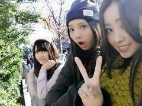

| 2013/12 04 Wed | おっと おっと(/*´ ▽`*)/ そんなこと言わんでblog 見てくださいな〜♪ ろってぃー です。 |
こんにちわ ♪
Rotty♪ です //
町は キラキラ光るツリー, イルミネーションに
包まれてるね *^^*
ツリーの光に灯されてると癒されます...
ひなの顔 つまみんこ〜.

コメント読んでると 皆さんと会話がしたくなりました.
だから、質問に答えるだけぢゃなく
皆さんのコメントに食い付きながら
これから色々と書きたいと思います*^^*
皆、こんな私に 質問や悩みをぶち開けてくれてありがとう。
皆の悩みに対し、ろってぃーが100点の答えを返せるかどうか分からない。
だから、もっといいアドバイスや方法を知ってる方は、
悩んでる Rotty夢☆の方に アドバイス等をしてやってください(*^^*)
☆ろってぃー最近 歌つくったりしてるのー？
★あのねー、するよ〜(*´▽`*)
誰にも聴いてもらってないけどね〜 ♪
ためておこうか...
☆コンタクト付けないみたいだけど
眼鏡は持ってるの？視力いいのかな？
★視力めっちゃいいよ〜 っと！
その代わり ろってぃ-ねぇ〜
すぐおめめ 疲れちゃうね〜あは。
☆Rotty夢とは何ですかぁ？
★ファンの方々を
○○ファミリ-,○○fam,とか言うぢゃん？
それで ろってぃ-famのことを違う言い方に変えようってなって
『Rotty夢☆』←ろってぃーム☆ってなったんだよ*^^*
☆ディズニーキャラの中で 何が一番好きですか？？
★全部好きだよん ほんなら
一番はティンカーベルかな〜*^^*
☆何で歌わせるとあんなに真洋さんはかっこよく
なるのでしょうか？ 日頃はあんなに面白いのに^^
★何かね〜 子供の頃から 歌うと
全部その時の気持ちが 歌に表れてたんだって.
歌に対する集中力だけは すごかったみたい.
この前、懐かしい人に会って 昔のまひろのことを
今になって聞いたんだぁ〜
でも、そう言われて嬉しかったな〜♪
でも 歌い終わると いつものろってぃーだよね♪
ってのは 小さい頃からずっと言われ続けてるよ*^^*
笑
＿＿＿＿＿＿＿＿＿＿＿＿＿＿＿＿＿＿＿
No.39 の女の子からこんな悩み相談がきました(´ゝ`)
☆ いつも学校まで、
電車降りてから歩いててんけど
いつも一緒に行ったり帰ったりしてた友達が２人おって２人とも明日から歩きじゃなくてバスで行くんやって。
でも私は親がバスの定期買ってくれへんくて、
やから歩くんやけど...これから毎日１人で学校行って帰らなあかん(´；ω；`)
他の友達は、バスか自転車か他の駅まで歩く子やから誘われへんし、自分から誘うのも苦手やし、どーしよーって感じなんよー。
その子たちは最近遊びに行くときも私だけ誘ってくれへんくなったりして(´・ω・`)
学校が楽しくないねん。
その子たちのこと私は好きやけど。
部活もその子たち一緒で他にいっぱいおるけど部活中もみんなの話に入っていけず１人でおること多くなってきて。まだ高1やからあと３年こんなん嫌やー(´・ω・`)でもどーしたらいいかわからん。
★ ろってぃ-も人間関係で悩んだ事があったよ。
たぶん、形は違ってもほとんどの人が
人間関係で悩んだ事があると思う。
でもその部活が好きで入ったんなら
これを理由に 好きな部活をやめないで欲しい！
人間関係ってさあ
今だけじゃなくこれから先、社会人になっても
続くと思うんだ。
今はほんと、孤独感を感じて辛いと思う。
けどいつか、『なんであんな事で怖がって悩んでたんやろ？』って思える日が必ずくると思う。
それに 今この辛さを越えられたら
この先同じ様に人間関係で何かあった時に
今よりもっと強くなれてると思うんだ！
多分、お父さん、お母さんも人間関係でいっぱい悩んできたと思うよ(´・・？
言いたいことがあるなら
勇気を出してその友達に話してみたらどうかな？
お互い誤解してる事もあるかもしれんよ。
もし、前みたいに仲良くなられへんのやったら
気にせんでええやん！
友達はその子達だけじゃないよ！
『いつか絶対見返してやるぅぅ！』って
強気でおればいいんや*^^*
って、、 今はそう思えるし、アドバイスできるけど
ろってぃ-も 小さい頃から
周りの人間を怒らせたらあかん、怒らせたらあかん。
って おびえてばっかやったから...
そんな友達に対して 強気でおれんかったし。
この辛い経験は必ずいつか役に立つ時がくるって(^^)
それがたとえ、今すぐぢゃなくても
５年後、10年後であってもね。
いっぱい辛い思いをした人の方が
きっと人の いたみが分かる人間になれる！
fight ！ 応援してるよ*^^*
学校で 何かあったらいつでも
ろってぃーblogにコメントしてきていいからね^^
そしたら 少しでも気持ちが楽になるでしょ♪
あっ、後 最後にっっ、
ろってぃーは 何に対しても
これは何かしら 理由があるんやと思ってる！
何か 失敗したり 嫌な状況におかれてても
この先何かがあるからや...だから 今 失敗しといて良かった。って 思うようにしてるよ^^
あいっ、今日は以上です )))
読んでくれてありがとう.
あ〜 今日のブログめっちゃ時間かかっちゃった*´▽`/
うわ〜お、 肩こった 肩こった。
なーーーんつってね 、もう歳かあ？＼(^o^)／
まだ 18歳だよww 笑
ひな, あみ, ろってぃ-

自然光いいねっ ぐぅ.
昼間はポカポカしてて そなに寒くないね*・ω・
キャラメルフラペチーノ。

ぢゃあねん、また更新するね、
ばいば〜〜い ＼(^o^)／
LOVE LOVE LOVE
皆 ラブだよ！ のし Rottyより..
コメント(195)
2013/12/04 23:54